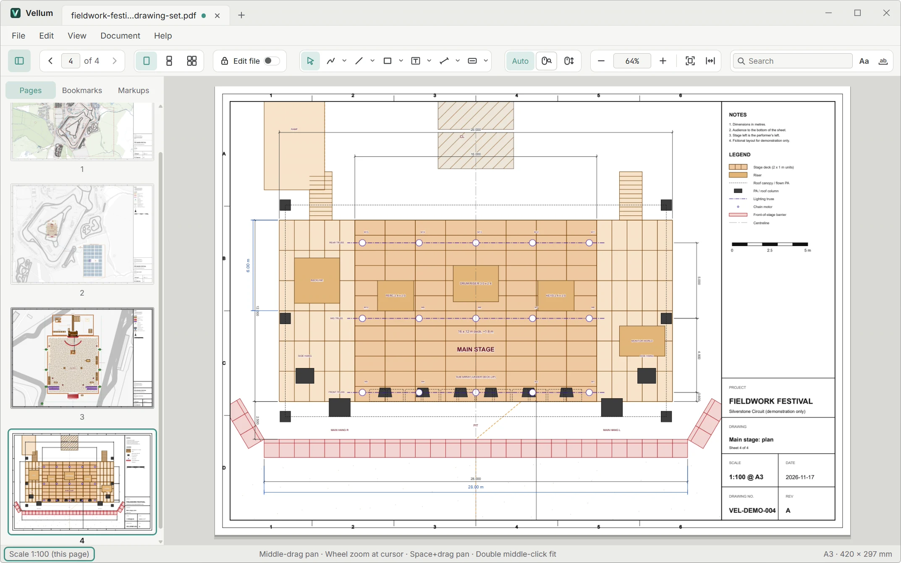
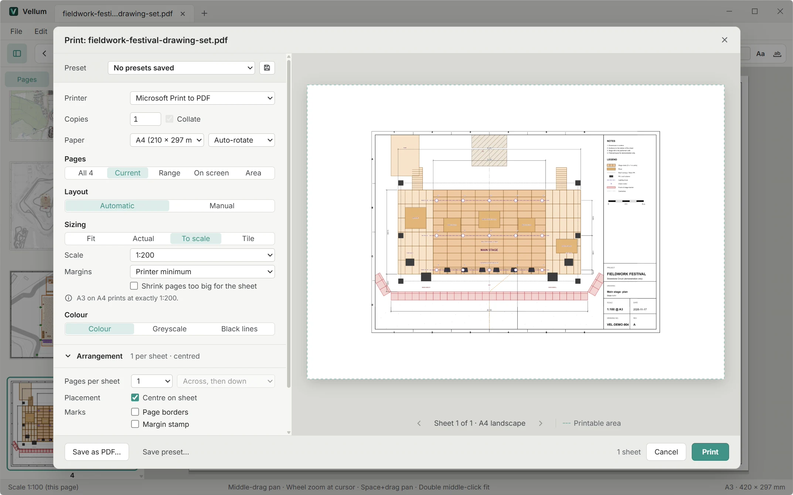
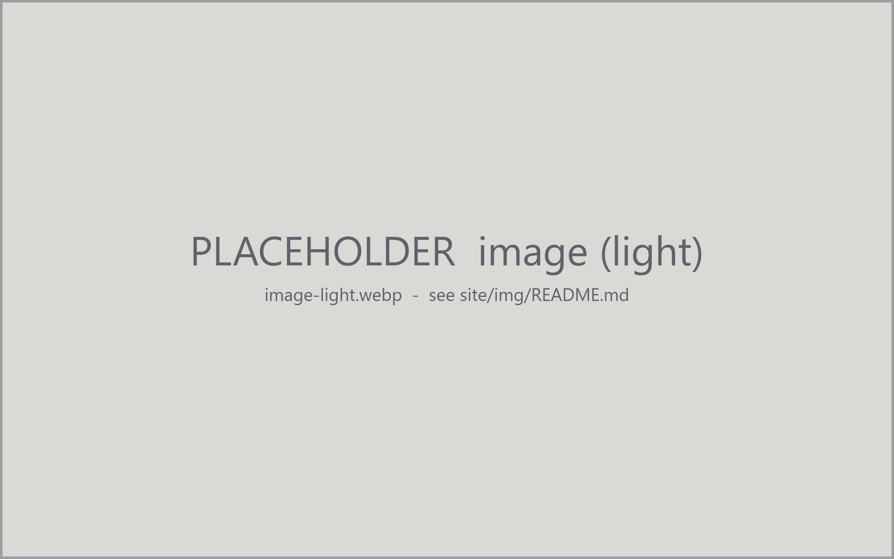

Why it exists
Stage plans, site layouts, rigging plots, aerial photos, sixty-year-old scanned blueprints: the files that make general-purpose PDF readers sit and think. They're built for documents. Vellum is built for drawings. It draws only what's on screen, at the detail you're looking at, so zooming in costs less, not more.
97 ms from letting go of the mouse to a sharp image, zoomed to 1600% on the heaviest real drawing tested.
What it does
-

Quick on big drawings
Pages render in tiles, previews fill the gaps while you move, and they're cached, so a drawing you opened yesterday is there before you've let go of the mouse.
-

Moves like CAD
The wheel zooms where your cursor is, middle-drag pans, double middle-click fits the page. A mini map for drawings bigger than the window. Office documents scroll like documents.
-

Real-world scale and measuring
Reads the scale from the title block, so the cursor position is in metres on site. Measure lengths, areas, perimeters and angles, and add dimensions.
-

Markup, stamps and signatures
Clouds, arrows, text, shapes, pen and highlighter, saved as ordinary PDF markup that Acrobat and everyone else can see. Stamps, and your signature, drawn once and placed anywhere.
-

Prints to scale
Fit, actual size, a real ratio like 1:200, or tiled with cut marks. Lay crops out by hand across several sheets. Black lines turns grubby scans into clean, solid linework.
-

Images too
JPEG, PNG, WebP, TIFF, BMP and GIF open the same way, colour profiles and all, however big.


The screenshots show the Fieldwork Festival, an event made up for them. It has no connection with the venue or its owners. Map data © OpenStreetMap contributors (ODbL). Contains OS data © Crown copyright and database right 2026 (Open Government Licence).
Windows will warn you the first time
When you open the installer, Windows may say Windows protected your PC
. To carry on:
- Choose More info.
- Choose Run anyway.
It warns because the installer isn't code signed. The source is public, and every release is built from it by GitHub Actions.
It installs for you alone, so it doesn't need admin rights. If your browser questions the download first, choose Keep.

Who made it
Vellum is made by Matt James, who opens site and venue drawings for a living and wanted a viewer that kept up with them. It's free, and the source is open.